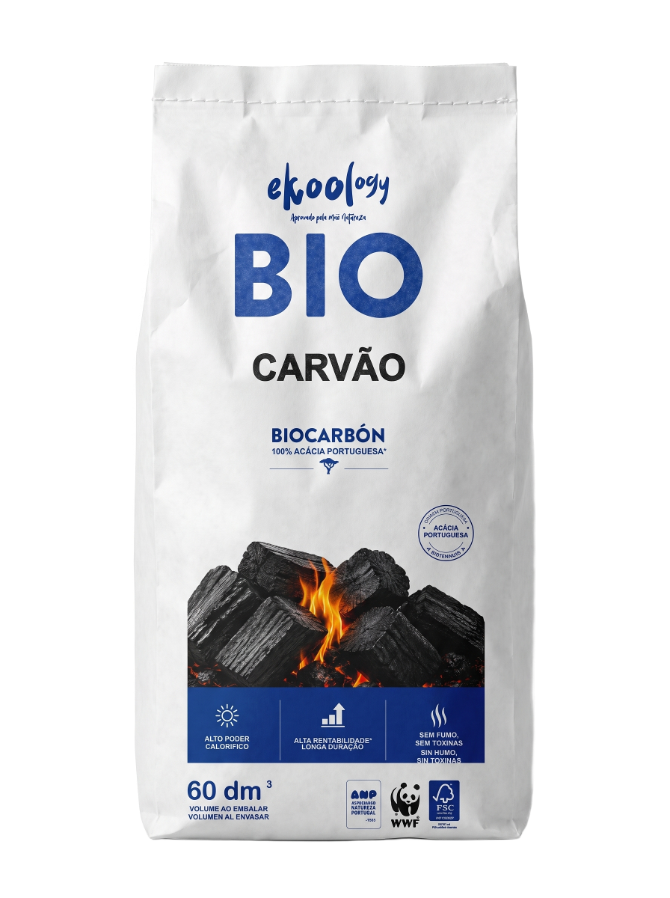
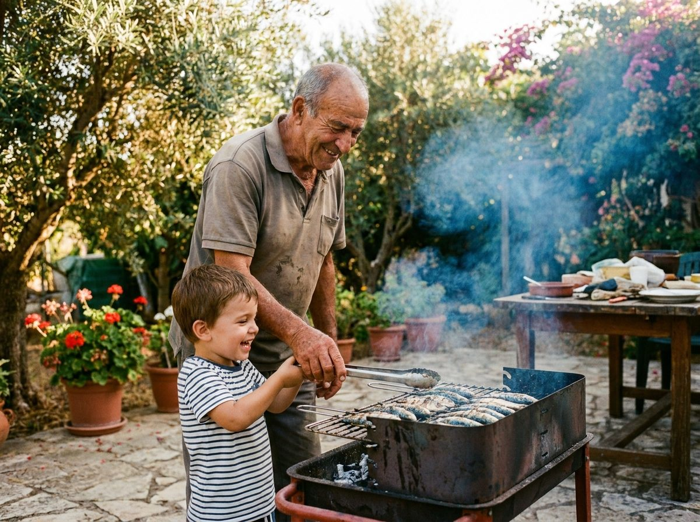

Tudo o que precisas de saber para dominar a brasa: quanto carvão, como acender, tempos exatos para peixe, carne e legumes — e os truques que separam o amador do mestre.

Com EKOOLOGY usa-se menos do que com carvão tradicional — o poder calorífico é superior. Guia rápido para grelhadas de ~1h30:
| Pessoas | Biocarvão EKOOLOGY | Equivalente |
|---|---|---|
| 2–4 | ~1,5 kg | meio saco de 15 dm³ |
| 5–8 | ~3 kg | um saco de 15 dm³ |
| 9–15 | ~5 kg | um saco de 30 dm³ chega e sobra |
| Festa grande (15+) | 8–10 kg | saco de 60 dm³ |
Para grelhadas longas (entrecosto, frango inteiro, defumados), junta ~30% ou usa briquetes, que duram mais tempo com calor constante.
Empilha o biocarvão em forma de pirâmide no centro da grelha. O ar precisa de circular — não compactes.
Duas ou três acendalhas de lã de madeira no centro da pirâmide. Nunca álcool nem gasolina: além de perigosos, estragam o sabor.
Acende e não mexas. O EKOOLOGY acende mais rápido do que o carvão tradicional — quando os pedaços de cima ganharem cinza branca, está quase.
Com tudo acinzentado, espalha a brasa conforme a técnica (direto ou indireto, já a seguir) e dá 5 minutos à grelha para aquecer antes de pousar comida.
Brasa espalhada debaixo da comida. Para peças finas e rápidas (até ~4 cm): sardinhas, bifes, secretos, lulas, legumes fatiados, espetadas. Selagem rápida, exterior caramelizado.
Brasa só de um lado (ou dos dois lados, com o centro livre); a comida cozinha ao lado do calor, com a tampa fechada. Para peças grandes e lentas: frango inteiro, entrecosto, lombos, peixes graúdos.
Truque de mestre: monta duas zonas — uma metade com brasa (direto) e outra sem (indireto). Selas no quente e acabas no suave, e tens sempre um sítio para onde fugir se a gordura pegar fogo.
Os chefs do mundo inteiro não grelham a olho: grelham a temperatura interna. Escolhe o ponto e vê o alvo exato — depois é só confiar no termómetro.
Alvo do chef (máximo sabor e suculência) lado a lado com a temperatura oficial de segurança (USDA). Tira sempre a peça 2–4 °C antes do alvo — o descanso completa.
O tempo é o guia; a temperatura é a lei. Carrega no ⏱ de qualquer linha e o relógio fica pronto a contar — avisamos a meio para virar.
Chama queima por fora e deixa cru por dentro. Espera pela cinza branca — sempre.
Aquece a grelha 5 min e esfrega com escova. Comida só agarra a grelha fria ou suja.
Deixa a crosta formar-se. Se agarra, ainda não está pronto para virar.
Metade com brasa, metade sem. Controlo total e seguro contra labaredas.
Peixe: antes. Carne vermelha: no fim (o sal puxa os sucos se ficar muito tempo).
5 minutos fora da grelha antes de cortar. Os sucos redistribuem-se — suculência garantida.

Ninguém nasce mestre da grelha — aprende-se ao lado de quem já queimou muitas sardinhas. Este manual é isso: o conhecimento de sempre, organizado para a tua próxima grelhada. Imprime-o, partilha-o, ensina-o.
E quando a dúvida aparecer com a brasa acesa, o Chef Kool responde na hora.
O nosso chef de brasa está no canto inferior direito desta página. Pergunta-lhe quanto carvão precisas, tempos de qualquer peça ou como resolver uma brasa teimosa.